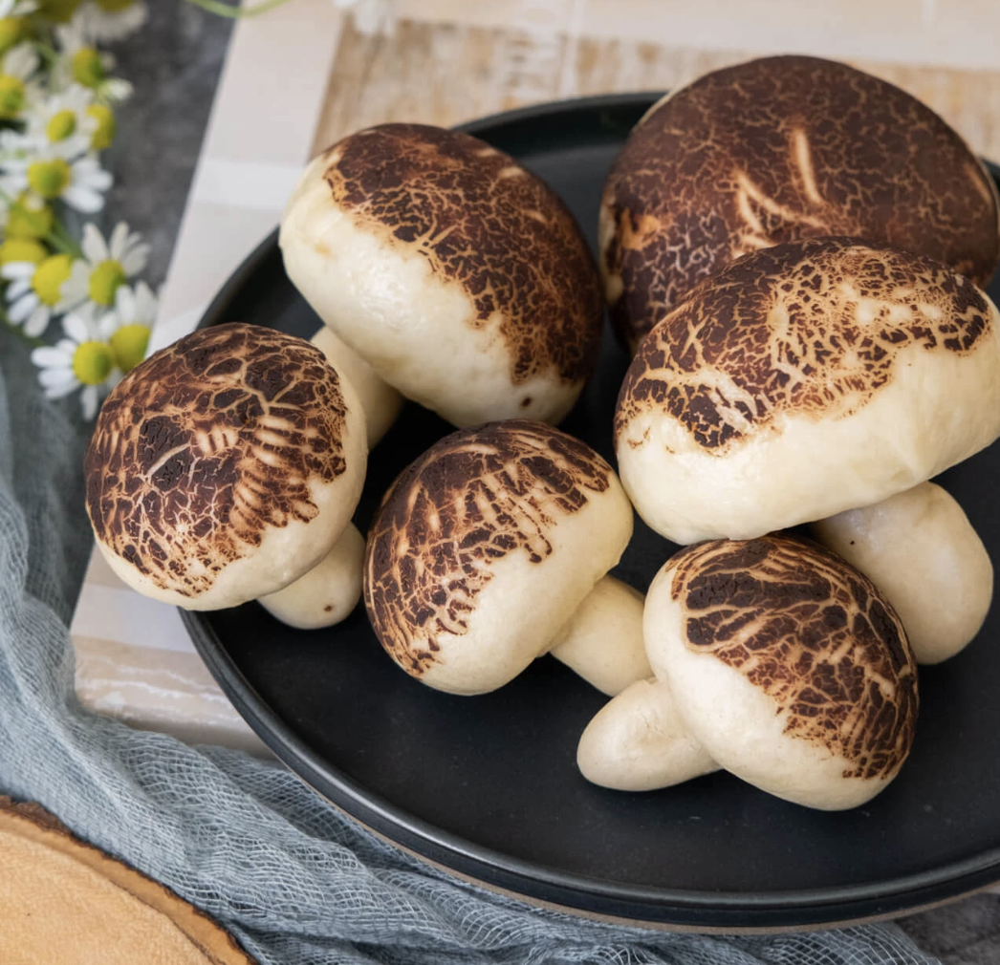

mushroom buns

these mushroom-steamed buns are the perfect treat! they're soft, puffy, shaped
like the delectable food and they can be filled with whatever your heart desires
-- red bean, custard, actual mushrooms, you name it!
Ingredients:
- all-purpose flour
- white sugar
- vegetable oil
- milk (may be substituted with water)
- active dry yeast
- cacao powder
Steps:
- In a small bowl, dissolve the sugar and active dry yeast with the milk
- Add all-purpose flour and milk mixture in a large mixing bowl, and combine well with a spatula. Keep kneading it until the dough forms.
- Transfer the dough to the table, and knead it for another 10 to 15 minutes until it becomes smooth.
- Then, set the dough in a clean bowl and cover it with plastic film. Let the dough rise for an hour at room temperature until it turns to double the size.
- After first proofing, gently knead the dough to release the air from it. Roll the dough into a long strip shape. Then cut it into 7 equal pieces. Roll the 6 of them into the balls, and set them aside. And leave the last one to make the bottom part of the mushroom, which divides it into 6 pieces and rolls them into the water drop shapes. Set them aside for the second time proofing (30 minutes).
- In a clean small bowl, mix 1 Tbsp of the Cacao powder and 5g sugar with 2 Tbsp hot water. Brush the chocolate paste on each of the doughs. Let them dry during the second time proofing.
- Second time proofing- Place each of the brushed doughs on a piece of parchment paper, and let them rise to double the size at room temperature for 30 minutes to 45 minutes.
- Bring the water to boil in a steamer, and steam the buns for 10 minutes on high heat. Turn off the heat, leave the buns inside for extra 3 minutes before you open the lid. (Make sure to steam the top and bottom parts of the mushrooms separately).
- Assembling the mushroom. Poke a small hole under the top part, and insert the bottom part into it to make a mushroom appearance.